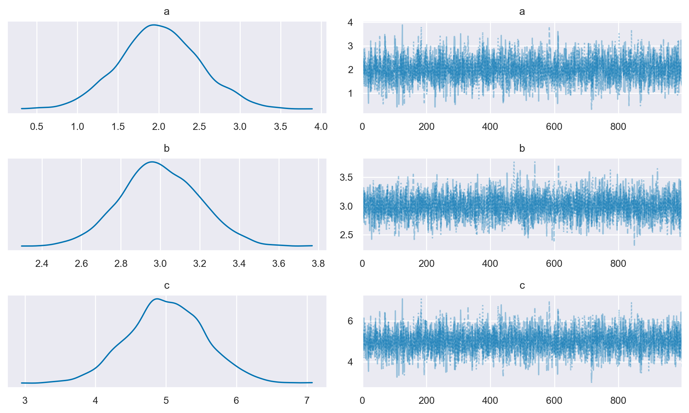
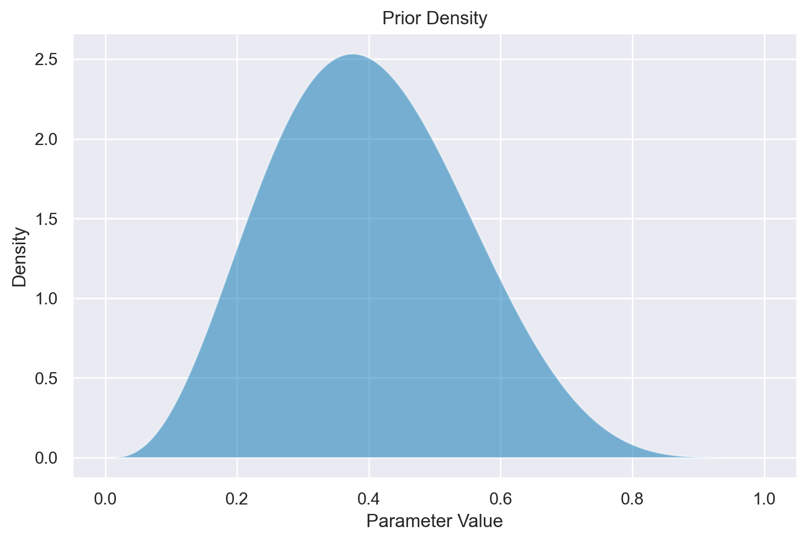
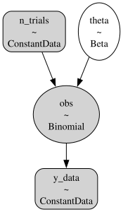
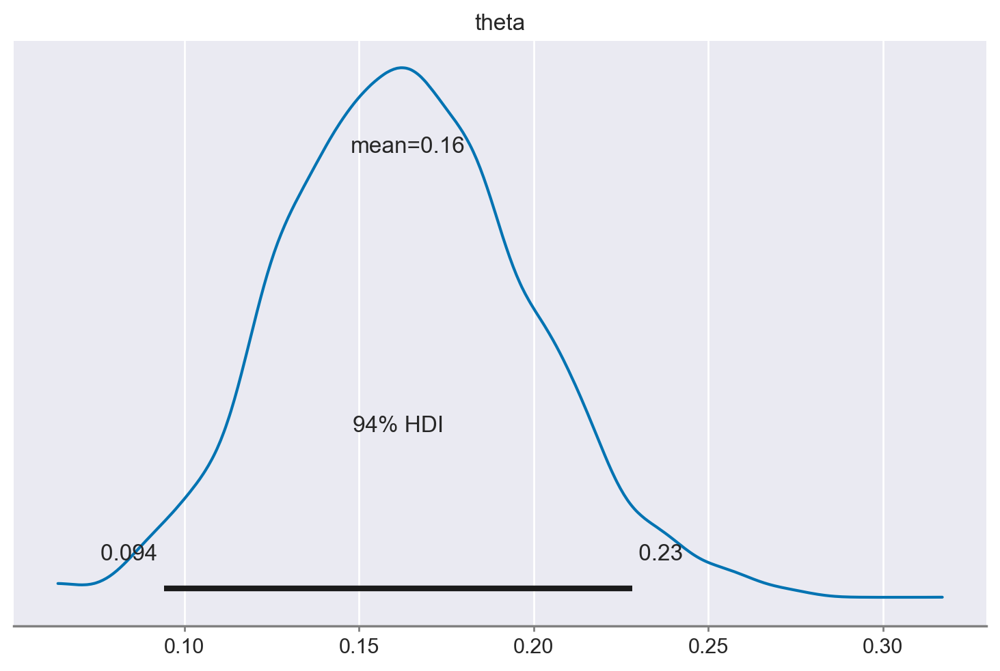
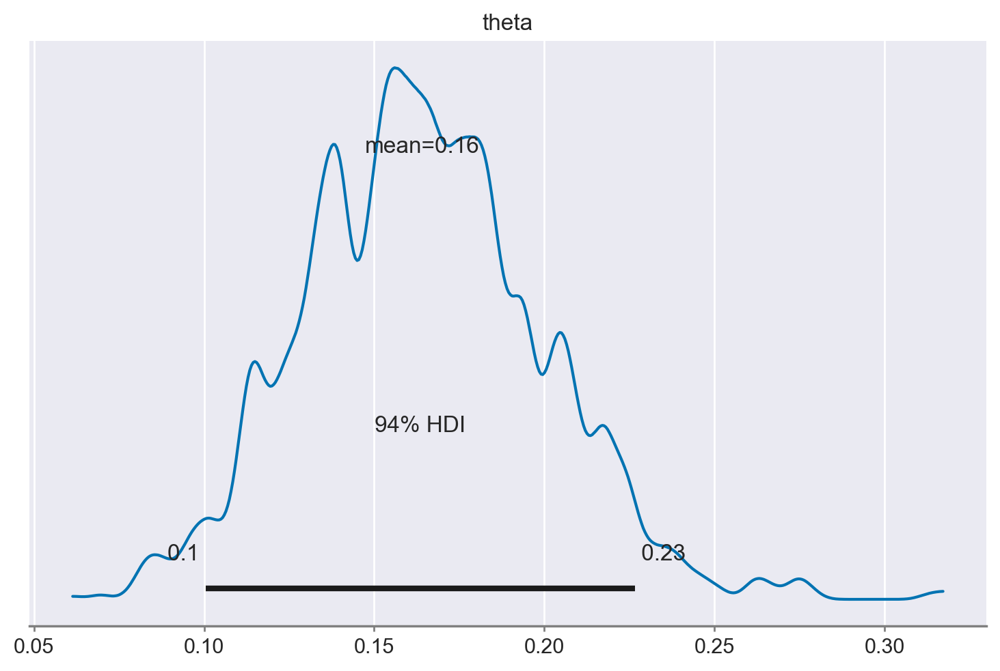
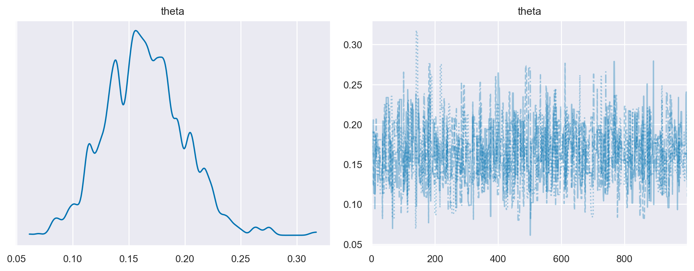
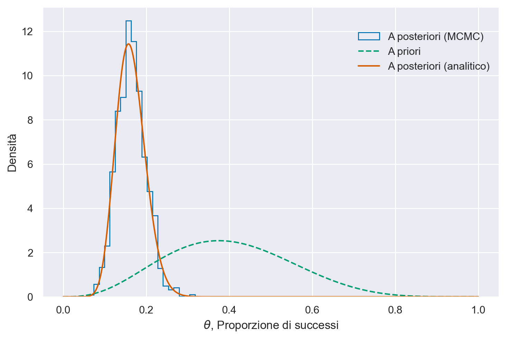

Inferenza bayesiana con PyMC#
In questo capitolo, faremo uso di PyMC, una libreria Python specializzata nella modellazione statistica bayesiana. A differenza del capitolo precedente, in cui abbiamo utilizzato le funzioni di scipy.stats, qui ricorreremo a un Linguaggio di Programmazione Probabilistico (PPL) per implementare il nostro campionatore. L’uso di PPL semplifica notevolmente l’attuazione dell’inferenza bayesiana, permettendo agli utenti di focalizzarsi sulla costruzione del modello e liberandoli da dettagli matematici e computazionali.
Nel contesto di questa metodologia avanzata, in questo e nei successivi capitoli esploreremo i modelli a un parametro. Questi modelli rappresentano una classe di distribuzioni campionarie identificate da un unico parametro sconosciuto. In particolare, ci concentreremo sull’inferenza bayesiana applicata a due tipi di modelli a un parametro: il modello binomiale e il modello di Poisson. Oltre ad essere utili strumenti statistici, questi modelli forniscono anche un ambiente semplice all’interno del quale è possibile apprendere le basi dell’analisi dei dati bayesiana, incluse le distribuzioni a priori coniugate, le distribuzioni predittive e le regioni di confidenza.
Campionatore No-U-Turn#
L’algoritmo Metropolis, che abbiamo esaminato in precedenza, offre un metodo per generare campioni da distribuzioni di probabilità attraverso la creazione di una catena di Markov, con la distribuzione desiderata come distribuzione di equilibrio (o stazionaria). Tuttavia, per modelli complessi, tale algoritmo può risultare inefficiente e richiedere un tempo considerevole per convergere verso una distribuzione stazionaria. Per affrontare questa sfida, sono stati sviluppati algoritmi Monte Carlo a catena di Markov (MCMC) più efficienti, tra cui il campionatore No-U-Turn (NUTS), gli algoritmi Metropolis-Hastings, il campionatore Gibbs e il campionatore Hamiltonian Monte Carlo. Questi algoritmi sono stati implementati in vari PPL, tra cui PyMC e Stan [CGH+17].
Nel presente capitolo useremo PyMC per condurre l’inferenza sulle proporzioni binomiali.
Preparazione del Notebook#
import numpy as np
import matplotlib.pyplot as plt
import seaborn as sns
import pymc as pm
import arviz as az
import xarray as xr
import scipy.stats as stats
import warnings
warnings.filterwarnings("ignore", category=UserWarning)
warnings.filterwarnings("ignore", category=FutureWarning)
warnings.filterwarnings("ignore", category=Warning)
%config InlineBackend.figure_format = 'retina'
RANDOM_SEED = 42
rng = np.random.default_rng(RANDOM_SEED)
az.style.use("arviz-darkgrid")
sns.set_theme(palette="colorblind")
Un esempio pratico di utilizzo del linguaggio probabilistico PyMC consiste nell’eseguire una semplice operazione aritmetica. Iniziamo a sommare due numeri interi in Python.
# adding 2 integers in Python
a = 2
b = 3
c = a + b
print(c)
5
Facciamo ora la stessa cosa usando PyMC.
# adding 2 random variables in PyMC
with pm.Model() as example:
a = pm.Normal("a", 2, 0.5)
b = pm.Normal("b", 3, 0.2)
c = pm.Deterministic("c", a + b)
trace_1 = pm.sample()
---------------------------------------------------------------------------
KeyboardInterrupt Traceback (most recent call last)
Cell In[4], line 6
4 b = pm.Normal("b", 3, 0.2)
5 c = pm.Deterministic("c", a + b)
----> 6 trace_1 = pm.sample()
File ~/opt/anaconda3/envs/pymc_env/lib/python3.11/site-packages/pymc/sampling/mcmc.py:689, in sample(draws, tune, chains, cores, random_seed, progressbar, step, nuts_sampler, initvals, init, jitter_max_retries, n_init, trace, discard_tuned_samples, compute_convergence_checks, keep_warning_stat, return_inferencedata, idata_kwargs, nuts_sampler_kwargs, callback, mp_ctx, model, **kwargs)
686 auto_nuts_init = False
688 initial_points = None
--> 689 step = assign_step_methods(model, step, methods=pm.STEP_METHODS, step_kwargs=kwargs)
691 if nuts_sampler != "pymc":
692 if not isinstance(step, NUTS):
File ~/opt/anaconda3/envs/pymc_env/lib/python3.11/site-packages/pymc/sampling/mcmc.py:239, in assign_step_methods(model, step, methods, step_kwargs)
231 selected = max(
232 methods_list,
233 key=lambda method, var=rv_var, has_gradient=has_gradient: method._competence( # type: ignore
234 var, has_gradient
235 ),
236 )
237 selected_steps.setdefault(selected, []).append(var)
--> 239 return instantiate_steppers(model, steps, selected_steps, step_kwargs)
File ~/opt/anaconda3/envs/pymc_env/lib/python3.11/site-packages/pymc/sampling/mcmc.py:140, in instantiate_steppers(model, steps, selected_steps, step_kwargs)
138 args = step_kwargs.get(name, {})
139 used_keys.add(name)
--> 140 step = step_class(vars=vars, model=model, **args)
141 steps.append(step)
143 unused_args = set(step_kwargs).difference(used_keys)
File ~/opt/anaconda3/envs/pymc_env/lib/python3.11/site-packages/pymc/step_methods/hmc/nuts.py:180, in NUTS.__init__(self, vars, max_treedepth, early_max_treedepth, **kwargs)
122 def __init__(self, vars=None, max_treedepth=10, early_max_treedepth=8, **kwargs):
123 r"""Set up the No-U-Turn sampler.
124
125 Parameters
(...)
178 `pm.sample` to the desired number of tuning steps.
179 """
--> 180 super().__init__(vars, **kwargs)
182 self.max_treedepth = max_treedepth
183 self.early_max_treedepth = early_max_treedepth
File ~/opt/anaconda3/envs/pymc_env/lib/python3.11/site-packages/pymc/step_methods/hmc/base_hmc.py:109, in BaseHMC.__init__(self, vars, scaling, step_scale, is_cov, model, blocked, potential, dtype, Emax, target_accept, gamma, k, t0, adapt_step_size, step_rand, **pytensor_kwargs)
107 else:
108 vars = get_value_vars_from_user_vars(vars, self._model)
--> 109 super().__init__(vars, blocked=blocked, model=self._model, dtype=dtype, **pytensor_kwargs)
111 self.adapt_step_size = adapt_step_size
112 self.Emax = Emax
File ~/opt/anaconda3/envs/pymc_env/lib/python3.11/site-packages/pymc/step_methods/arraystep.py:164, in GradientSharedStep.__init__(self, vars, model, blocked, dtype, logp_dlogp_func, **pytensor_kwargs)
161 model = modelcontext(model)
163 if logp_dlogp_func is None:
--> 164 func = model.logp_dlogp_function(vars, dtype=dtype, **pytensor_kwargs)
165 else:
166 func = logp_dlogp_func
File ~/opt/anaconda3/envs/pymc_env/lib/python3.11/site-packages/pymc/model/core.py:612, in Model.logp_dlogp_function(self, grad_vars, tempered, **kwargs)
609 costs = [self.logp()]
611 input_vars = {i for i in graph_inputs(costs) if not isinstance(i, Constant)}
--> 612 ip = self.initial_point(0)
613 extra_vars_and_values = {
614 var: ip[var.name]
615 for var in self.value_vars
616 if var in input_vars and var not in grad_vars
617 }
618 return ValueGradFunction(costs, grad_vars, extra_vars_and_values, **kwargs)
File ~/opt/anaconda3/envs/pymc_env/lib/python3.11/site-packages/pymc/model/core.py:1069, in Model.initial_point(self, random_seed)
1056 def initial_point(self, random_seed: SeedSequenceSeed = None) -> Dict[str, np.ndarray]:
1057 """Computes the initial point of the model.
1058
1059 Parameters
(...)
1067 Maps names of transformed variables to numeric initial values in the transformed space.
1068 """
-> 1069 fn = make_initial_point_fn(model=self, return_transformed=True)
1070 return Point(fn(random_seed), model=self)
File ~/opt/anaconda3/envs/pymc_env/lib/python3.11/site-packages/pymc/initial_point.py:152, in make_initial_point_fn(model, overrides, jitter_rvs, default_strategy, return_transformed)
149 # Replace original rng shared variables so that we don't mess with them
150 # when calling the final seeded function
151 initial_values = replace_rng_nodes(initial_values)
--> 152 func = compile_pymc(inputs=[], outputs=initial_values, mode=pytensor.compile.mode.FAST_COMPILE)
154 varnames = []
155 for var in model.free_RVs:
File ~/opt/anaconda3/envs/pymc_env/lib/python3.11/site-packages/pymc/pytensorf.py:990, in compile_pymc(inputs, outputs, random_seed, mode, **kwargs)
988 opt_qry = mode.provided_optimizer.including("random_make_inplace", check_parameter_opt)
989 mode = Mode(linker=mode.linker, optimizer=opt_qry)
--> 990 pytensor_function = pytensor.function(
991 inputs,
992 outputs,
993 updates={**rng_updates, **kwargs.pop("updates", {})},
994 mode=mode,
995 **kwargs,
996 )
997 return pytensor_function
File ~/opt/anaconda3/envs/pymc_env/lib/python3.11/site-packages/pytensor/compile/function/__init__.py:315, in function(inputs, outputs, mode, updates, givens, no_default_updates, accept_inplace, name, rebuild_strict, allow_input_downcast, profile, on_unused_input)
309 fn = orig_function(
310 inputs, outputs, mode=mode, accept_inplace=accept_inplace, name=name
311 )
312 else:
313 # note: pfunc will also call orig_function -- orig_function is
314 # a choke point that all compilation must pass through
--> 315 fn = pfunc(
316 params=inputs,
317 outputs=outputs,
318 mode=mode,
319 updates=updates,
320 givens=givens,
321 no_default_updates=no_default_updates,
322 accept_inplace=accept_inplace,
323 name=name,
324 rebuild_strict=rebuild_strict,
325 allow_input_downcast=allow_input_downcast,
326 on_unused_input=on_unused_input,
327 profile=profile,
328 output_keys=output_keys,
329 )
330 return fn
File ~/opt/anaconda3/envs/pymc_env/lib/python3.11/site-packages/pytensor/compile/function/pfunc.py:469, in pfunc(params, outputs, mode, updates, givens, no_default_updates, accept_inplace, name, rebuild_strict, allow_input_downcast, profile, on_unused_input, output_keys, fgraph)
455 profile = ProfileStats(message=profile)
457 inputs, cloned_outputs = construct_pfunc_ins_and_outs(
458 params,
459 outputs,
(...)
466 fgraph=fgraph,
467 )
--> 469 return orig_function(
470 inputs,
471 cloned_outputs,
472 mode,
473 accept_inplace=accept_inplace,
474 name=name,
475 profile=profile,
476 on_unused_input=on_unused_input,
477 output_keys=output_keys,
478 fgraph=fgraph,
479 )
File ~/opt/anaconda3/envs/pymc_env/lib/python3.11/site-packages/pytensor/compile/function/types.py:1750, in orig_function(inputs, outputs, mode, accept_inplace, name, profile, on_unused_input, output_keys, fgraph)
1748 try:
1749 Maker = getattr(mode, "function_maker", FunctionMaker)
-> 1750 m = Maker(
1751 inputs,
1752 outputs,
1753 mode,
1754 accept_inplace=accept_inplace,
1755 profile=profile,
1756 on_unused_input=on_unused_input,
1757 output_keys=output_keys,
1758 name=name,
1759 fgraph=fgraph,
1760 )
1761 with config.change_flags(compute_test_value="off"):
1762 fn = m.create(defaults)
File ~/opt/anaconda3/envs/pymc_env/lib/python3.11/site-packages/pytensor/compile/function/types.py:1523, in FunctionMaker.__init__(self, inputs, outputs, mode, accept_inplace, function_builder, profile, on_unused_input, fgraph, output_keys, name, no_fgraph_prep)
1520 self.fgraph = fgraph
1522 if not no_fgraph_prep:
-> 1523 self.prepare_fgraph(inputs, outputs, found_updates, fgraph, mode, profile)
1525 assert len(fgraph.outputs) == len(outputs + found_updates)
1527 # The 'no_borrow' outputs are the ones for which that we can't
1528 # return the internal storage pointer.
File ~/opt/anaconda3/envs/pymc_env/lib/python3.11/site-packages/pytensor/compile/function/types.py:1411, in FunctionMaker.prepare_fgraph(inputs, outputs, additional_outputs, fgraph, mode, profile)
1404 rewrite_time = None
1406 with config.change_flags(
1407 mode=mode,
1408 compute_test_value=config.compute_test_value_opt,
1409 traceback__limit=config.traceback__compile_limit,
1410 ):
-> 1411 rewriter_profile = rewriter(fgraph)
1413 end_rewriter = time.perf_counter()
1414 rewrite_time = end_rewriter - start_rewriter
File ~/opt/anaconda3/envs/pymc_env/lib/python3.11/site-packages/pytensor/graph/rewriting/basic.py:125, in GraphRewriter.__call__(self, fgraph)
123 def __call__(self, fgraph):
124 """Rewrite a `FunctionGraph`."""
--> 125 return self.rewrite(fgraph)
File ~/opt/anaconda3/envs/pymc_env/lib/python3.11/site-packages/pytensor/graph/rewriting/basic.py:121, in GraphRewriter.rewrite(self, fgraph, *args, **kwargs)
112 """
113
114 This is meant as a shortcut for the following::
(...)
118
119 """
120 self.add_requirements(fgraph)
--> 121 return self.apply(fgraph, *args, **kwargs)
File ~/opt/anaconda3/envs/pymc_env/lib/python3.11/site-packages/pytensor/graph/rewriting/basic.py:292, in SequentialGraphRewriter.apply(self, fgraph)
290 nb_nodes_before = len(fgraph.apply_nodes)
291 t0 = time.perf_counter()
--> 292 sub_prof = rewriter.apply(fgraph)
293 l.append(float(time.perf_counter() - t0))
294 sub_profs.append(sub_prof)
File ~/opt/anaconda3/envs/pymc_env/lib/python3.11/site-packages/pytensor/graph/rewriting/basic.py:2458, in EquilibriumGraphRewriter.apply(self, fgraph, start_from)
2456 nb = change_tracker.nb_imported
2457 t_rewrite = time.perf_counter()
-> 2458 sub_prof = grewrite.apply(fgraph)
2459 time_rewriters[grewrite] += time.perf_counter() - t_rewrite
2460 sub_profs.append(sub_prof)
File ~/opt/anaconda3/envs/pymc_env/lib/python3.11/site-packages/pytensor/graph/rewriting/basic.py:2040, in WalkingGraphRewriter.apply(self, fgraph, start_from)
2038 continue
2039 current_node = node
-> 2040 nb += self.process_node(fgraph, node)
2041 loop_t = time.perf_counter() - t0
2042 finally:
File ~/opt/anaconda3/envs/pymc_env/lib/python3.11/site-packages/pytensor/graph/rewriting/basic.py:1922, in NodeProcessingGraphRewriter.process_node(self, fgraph, node, node_rewriter)
1920 assert node_rewriter is not None
1921 try:
-> 1922 replacements = node_rewriter.transform(fgraph, node)
1923 except Exception as e:
1924 if self.failure_callback is not None:
File ~/opt/anaconda3/envs/pymc_env/lib/python3.11/site-packages/pytensor/graph/rewriting/basic.py:1082, in FromFunctionNodeRewriter.transform(self, fgraph, node)
1077 if not (
1078 node.op in self._tracks or isinstance(node.op, self._tracked_types)
1079 ):
1080 return False
-> 1082 return self.fn(fgraph, node)
File ~/opt/anaconda3/envs/pymc_env/lib/python3.11/site-packages/pytensor/tensor/rewriting/basic.py:1105, in constant_folding(fgraph, node)
1102 storage_map[o] = [None]
1103 compute_map[o] = [False]
-> 1105 thunk = node.op.make_thunk(node, storage_map, compute_map, no_recycling=[])
1106 required = thunk()
1108 # A node whose inputs are all provided should always return successfully
File ~/opt/anaconda3/envs/pymc_env/lib/python3.11/site-packages/pytensor/link/c/op.py:119, in COp.make_thunk(self, node, storage_map, compute_map, no_recycling, impl)
115 self.prepare_node(
116 node, storage_map=storage_map, compute_map=compute_map, impl="c"
117 )
118 try:
--> 119 return self.make_c_thunk(node, storage_map, compute_map, no_recycling)
120 except (NotImplementedError, MethodNotDefined):
121 # We requested the c code, so don't catch the error.
122 if impl == "c":
File ~/opt/anaconda3/envs/pymc_env/lib/python3.11/site-packages/pytensor/link/c/op.py:84, in COp.make_c_thunk(self, node, storage_map, compute_map, no_recycling)
82 print(f"Disabling C code for {self} due to unsupported float16")
83 raise NotImplementedError("float16")
---> 84 outputs = cl.make_thunk(
85 input_storage=node_input_storage, output_storage=node_output_storage
86 )
87 thunk, node_input_filters, node_output_filters = outputs
89 @is_cthunk_wrapper_type
90 def rval():
File ~/opt/anaconda3/envs/pymc_env/lib/python3.11/site-packages/pytensor/link/c/basic.py:1209, in CLinker.make_thunk(self, input_storage, output_storage, storage_map, cache, **kwargs)
1174 """Compile this linker's `self.fgraph` and return a function that performs the computations.
1175
1176 The return values can be used as follows:
(...)
1206
1207 """
1208 init_tasks, tasks = self.get_init_tasks()
-> 1209 cthunk, module, in_storage, out_storage, error_storage = self.__compile__(
1210 input_storage, output_storage, storage_map, cache
1211 )
1213 res = _CThunk(cthunk, init_tasks, tasks, error_storage, module)
1214 res.nodes = self.node_order
File ~/opt/anaconda3/envs/pymc_env/lib/python3.11/site-packages/pytensor/link/c/basic.py:1129, in CLinker.__compile__(self, input_storage, output_storage, storage_map, cache)
1127 input_storage = tuple(input_storage)
1128 output_storage = tuple(output_storage)
-> 1129 thunk, module = self.cthunk_factory(
1130 error_storage,
1131 input_storage,
1132 output_storage,
1133 storage_map,
1134 cache,
1135 )
1136 return (
1137 thunk,
1138 module,
(...)
1147 error_storage,
1148 )
File ~/opt/anaconda3/envs/pymc_env/lib/python3.11/site-packages/pytensor/link/c/basic.py:1652, in CLinker.cthunk_factory(self, error_storage, in_storage, out_storage, storage_map, cache)
1650 node.op.prepare_node(node, storage_map, None, "c")
1651 if cache is None:
-> 1652 cache = get_module_cache()
1653 module = cache.module_from_key(key=key, lnk=self)
1655 vars = self.inputs + self.outputs + self.orphans
File ~/opt/anaconda3/envs/pymc_env/lib/python3.11/site-packages/pytensor/link/c/basic.py:55, in get_module_cache(init_args)
45 def get_module_cache(init_args: Optional[dict[str, Any]] = None) -> "ModuleCache":
46 """
47
48 Parameters
(...)
53
54 """
---> 55 return _get_module_cache(config.compiledir, init_args=init_args)
File ~/opt/anaconda3/envs/pymc_env/lib/python3.11/site-packages/pytensor/link/c/cmodule.py:1636, in get_module_cache(dirname, init_args)
1634 init_args = {}
1635 if _module_cache is None:
-> 1636 _module_cache = ModuleCache(dirname, **init_args)
1637 atexit.register(_module_cache._on_atexit)
1638 elif init_args:
File ~/opt/anaconda3/envs/pymc_env/lib/python3.11/site-packages/pytensor/link/c/cmodule.py:721, in ModuleCache.__init__(self, dirname, check_for_broken_eq, do_refresh)
718 self.time_spent_in_check_key = 0
720 if do_refresh:
--> 721 self.refresh()
File ~/opt/anaconda3/envs/pymc_env/lib/python3.11/site-packages/pytensor/link/c/cmodule.py:1019, in ModuleCache.refresh(self, age_thresh_use, delete_if_problem, cleanup)
1016 entry = key_data.get_entry()
1017 try:
1018 # Test to see that the file is [present and] readable.
-> 1019 with open(entry):
1020 gone = False
1021 except OSError:
File <frozen codecs>:309, in __init__(self, errors)
KeyboardInterrupt:
with pm.Model() as example:
In questa linea, viene creato un nuovo modello probabilistico PyMC utilizzando un contesto Python with. All’interno di questo contesto, tutte le variabili casuali e le operazioni definite saranno automaticamente associate al modello chiamato example.
a = pm.Normal("a", 2, 0.5)
Qui viene definita una variabile casuale normalmente distribuita con un valore medio (\(\mu\)) di 2 e una deviazione standard (\(\sigma\)) di 0.5. Questa variabile è denominata “a”.
b = pm.Normal("b", 3, 0.2)
Qui viene definita un’altra variabile aleatoria normalmente distribuita, ma questa volta con un valore medio di 3 e una deviazione standard di 0.2. Questa variabile è denominata “b”.
c = pm.Deterministic("c", a + b)
In questa linea, viene creata una nuova variabile deterministica “c” che è definita come la somma delle variabili “a” e “b”. Essendo una variabile deterministica, il suo valore è completamente determinato dai valori di “a” e “b”.
trace_1 = pm.sample()
Infine, questa linea avvia il processo di campionamento MCMC (Monte Carlo Markov Chain) per generare un campione dalla distribuzione a posteriori del modello. Il risultato del campionamento è salvato in un oggetto chiamato trace_1, che contiene le tracce delle variabili aleatorie durante il campionamento.
Per rappresentare graficamente i risultati del processo di campionamento, possiamo utilizzare la funzione plot_trace() fornita dalla libreria ArviZ. Questa funzione crea un diagramma delle tracce che visualizza sia la serie temporale dei valori campionati (traccia) sia la loro distribuzione.
az.plot_trace(trace_1, figsize=(10, 6), combined=True)
plt.tight_layout()

Il grafico delle tracce illustra che la moda della distribuzione a posteriori della variabile \(c\) corrisponde al risultato che prevedevamo.
Generazione X#
Ora analizzeremo un caso di inferenza basata su dati reali, in contrapposizione alla situazione deterministica esaminata precedentemente. Prenderemo nuovamente in esame i dati discussi nel capitolo precedente, relativi agli artisti della Generazione X rappresentati al MOMA. Ricordiamo che abbiamo registrato 14 successi su 100 tentativi e abbiamo basato il parametro \( \theta \) (la probabilità di appartenere alla Generazione X o a generazioni successive) su una distribuzione Beta(4, 6).
Il nostro modello, quindi, si articola come segue:
In questa impostazione, la prima riga definisce la distribuzione a priori, \(p(\theta)\), mentre la seconda riga determina la funzione di verosimiglianza, \(p(y_1, \ldots, y_{100} | \theta)\).
Nel caso presente abbiamo deciso di rappresentare la nostra incertezza a priori rispetto al parametro \( \theta \) mediante una Beta(4, 6).
x = np.linspace(0, 1, 1000)
prior_density = stats.beta.pdf(x, 4, 6)
plt.fill_between(x, prior_density, alpha=0.5)
plt.xlabel("Parameter Value")
plt.ylabel("Density")
plt.title("Prior Density");

Per questa distribuzione a priori e il modello di campionamento sopra indicato, la regola di Bayes fornisce
dove \(p(y_i \mid \theta)\) è la distribuzione bernoulliana
e \(p(\theta)\) è una distribuzione Beta(4,6).
Nel contesto specifico che stiamo analizzando, è possibile trovare una soluzione analitica per stimare la distribuzione a posteriori. Per esempio, se \( y = 14 \) e \( n = 100 \), la distribuzione a posteriori sarà una Beta(18, 92). Infatti, la distribuzione Beta è un “prior coniugato” per la distribuzione binomiale, il che significa che se iniziamo con un prior Beta e osserviamo dati che seguono una distribuzione binomiale, il posterior sarà ancora una distribuzione Beta.
La formula per aggiornare i parametri della distribuzione Beta a posteriori \( \text{Beta}(\alpha', \beta') \) a partire da un prior \( \text{Beta}(\alpha, \beta) \) e dati binomiali con \( y \) successi e \( n \) prove è la seguente:
Nel nostro caso, \( \alpha = 4 \), \( \beta = 6 \), \( y = 14 \), e \( n = 100 \). Utilizzando queste formule:
otteniamo che la distribuzione a posteriori è una \( \text{Beta}(18, 92) \).
Sebbene in questo caso particolare possiamo facilmente ottenere una soluzione analitica per la distribuzione a posteriori, tale opportunità è rara nella maggior parte dei modelli di inferenza bayesiana. Spesso, per gestire modelli più complessi, è necessario ricorrere a tecniche di approssimazione numerica, come i metodi MCMC. Nell’esempio qui discusso, applicheremo i metodi MCMC a un caso per il quale abbiamo già una soluzione analitica, permettendoci così di confrontare i risultati derivati dall’approccio analitico con quelli ottenuti attraverso l’approssimazione numerica.
Dedurre una proporzione con PyMC#
Adesso eseguiremo l’analisi che abbiamo precedentemente condotto utilizzando l’algoritmo di Metropolis usando PyMC. Assumiamo di avere già installato il pacchetto PyMC. Una volta installato, dovremo importare le librerie necessarie, tra cui Matplotlib, Numpy, Scipy, Arviz e ovviamente PyMC stesso.
Esamineremo ora come specificare il modello beta-binomiale attraverso PyMC. Per condurre l’analisi tramite PyMC, sarà prima necessario delineare la struttura del modello bayesiano e, successivamente, eseguire il campionamento dalla distribuzione a posteriori. Approfondiremo entrambi questi passaggi nell’ambito del nostro esempio.
Dati#
y = 14
ntrials = 100
Distribuzione a priori#
I parametri della distribuzione Beta, scelta come distribuzione a priori per \(\theta\), sono i seguenti.
alpha_prior = 4
beta_prior = 6
Creazione del Modello#
La libreria PyMC utilizza il costrutto with di Python per creare un ambiente all’interno del quale possiamo definire le variabili aleatorie, le loro distribuzioni e le relazioni tra di esse. In questo esempio, illustreremo come utilizzare PyMC attraverso un modello di distribuzione binomiale con un prior Beta.
with pm.Model() as bb_model:
# Prior
theta = pm.Beta("theta", alpha=alpha_prior, beta=beta_prior)
# Likelihood
obs = pm.Binomial("obs", p=theta, n=ntrials, observed=y)
Inizializzazione#
Il primo passo nella creazione del modello è l’uso della sintassi with pm.Model() as bb_model:. Questa linea di codice utilizza il meccanismo dei contesti manager in Python per instanziare un modello probabilistico con PyMC.
pm.Model(): Crea un nuovo ambiente di modello probabilistico. Questo ambiente funge da contenitore per variabili aleatorie, distribuzioni e relazioni tra variabili.
as bb_model: Assegna l’ambiente di modello a una variabile Python chiamata
bb_model, facilitando le interazioni future con il modello.
Variabili aleatorie e distribuzioni#
Nel linguaggio di PyMC, le variabili aleatorie (Random Variables, RV) sono i mattoni fondamentali di un modello probabilistico. Una RV può essere definita da una distribuzione di probabilità, come la distribuzione normale o la distribuzione binomiale.
Definizione del prior: All’interno dell’ambiente di modello, utilizziamo
pm.Betaper definire una variabile aleatoria chiamatathetache rappresenta la distribuzione a priori. Gli iperparametrialpha_priorebeta_priordefiniscono i parametri della distribuzione Beta.
theta = pm.Beta("theta", alpha=alpha_prior, beta=beta_prior)
Definizione della verosimiglianza: Oltre ai priori, abbiamo bisogno di definire una funzione di verosimiglianza che collega i nostri dati osservati al modello. In questo esempio, utilizziamo una distribuzione binomiale per la verosimiglianza. La variabile
yrappresenta i dati osservati entrialsil numero totale di prove.
obs = pm.Binomial("obs", p=theta, n=ntrials, observed=y)
Variabili osservate e non osservate#
Nel modello, ogni variabile aleatoria può essere o osservata o non osservata:
Variabili non osservate: Come
theta, sono variabili aleatorie il cui valore non è noto e viene stimato dal modello.Variabili osservate: Come
obs, sono variabili aleatorie per le quali abbiamo dati osservati. Questi dati sono passati utilizzando l’argomentoobserved.
Relazioni gerarchiche#
Infine, le variabili aleatorie possono essere utilizzate come parametri per altre variabili aleatorie, stabilendo una relazione “genitore-figlio”. Nel nostro esempio, la variabile theta (genitore) è utilizzata come parametro per la variabile obs (figlio), creando una relazione gerarchica.
Con questo modello, abbiamo un sistema coerente e interconnesso che possiamo utilizzare per eseguire inferenze bayesiane, stime di parametri o previsioni.
Visualizziamo la struttura del modello.
pm.model_to_graphviz(bb_model)

Contenitori di dati#
I dati possono essere incorporati in un modello PyMC attraverso vari metodi, che includono array multidimensionali di NumPy, serie e DataFrame di Pandas, e anche TensorVariables di PyTorch. Sebbene sia possibile introdurre questi formati di dati “grezzi” direttamente nel modello PyMC, l’approccio più consigliato è quello di utilizzare uno dei due contenitori di dati specifici forniti da PyMC: pymc.ConstantData() e pymc.MutableData(). Come suggeriscono i loro nomi, solo MutableData permette modifiche ai dati dopo la loro inizializzazione. L’utilizzo di pymc.MutableData() è particolarmente vantaggioso quando si vuole aggiornare i dati senza la necessità di ricostruire l’intero modello. Questa flessibilità si rivela estremamente utile in scenari come analisi in tempo reale o esperimenti computazionali iterativi. Per gli scopi di questo insegnamento, un contenitore di dati immutabile come pymc.ConstantData() è generalmente sufficiente.
Nell’esempio precedente, abbiamo inserito dati “non elaborati” in PyMC. Ora esploreremo come utilizzare un contenitore di dati. In questa versione aggiornata del modello, creiamo un contenitore pm.ConstantData per contenere le osservazioni e passiamo tale contenitore come parametro all’argomento observed. Creiamo inoltre un contenitore pm.ConstantData per contenere il parametro che specifica il numero di prove e lo passiamo all’argomento n.
with pm.Model() as bb_model:
y_data = pm.ConstantData("y_data", y)
n_trials = pm.ConstantData("n_trials", ntrials)
theta = pm.Beta("theta", alpha=alpha_prior, beta=beta_prior)
obs = pm.Binomial("obs", p=theta, n=n_trials, observed=y_data)
Poiché abbiamo utilizzato il contenitore pm.ConstantData, i dati compaiono ora nel nostro grafo probabilistico. Questo grafo distingue tra variabili endogene (vale a dire, le variabili “a valle” che rappresentano gli effetti delle cause nel modello, e verso cui puntano le frecce) ed esogene (ossia le variabili “a monte” che sono all’origine della generazione dei dati; da queste variabili partono le frecce orientate). Le variabili ombreggiate in grigio sono quelle che sono state osservate. Le forme rettangolari con angoli arrotondati evidenziano che si tratta di dati inclusi nel modello.
pm.model_to_graphviz(bb_model)

Inferenza#
Avendo completamente specificato un modello probabilistico, possiamo selezionare un metodo appropriato per l’inferenza. Questo potrebbe essere una semplice ottimizzazione, dove troviamo le stime del massimo a posteriori per tutti i parametri del modello.
with bb_model:
fit = pm.find_MAP()
Show code cell output
fit["theta"]
array(0.15740746)
In alternativa all’ottimizzazione per la ricerca del massimo a posteriori (MAP), possiamo optare per un approccio completamente bayesiano e utilizzare il metodo Markov chain Monte Carlo (MCMC) per adattare il modello. Questa tecnica produce una traccia di valori campionati, rappresentando la distribuzione marginale a posteriori di tutti i parametri del modello. La funzione sample fornisce l’interfaccia per tutti i metodi MCMC disponibili in PyMC.
Nel contesto della programmazione probabilistica con PyMC, il campionamento MCMC è reso particolarmente semplice. Ad esempio, se desideriamo ottenere 1.000 campioni a posteriori dopo aver calibrato il campionatore per 1.000 iterazioni, possiamo effettuare una chiamata come la seguente:
with bb_model:
idata = pm.sample(1000, tune=1000)
Show code cell output
Auto-assigning NUTS sampler...
Initializing NUTS using jitter+adapt_diag...
Multiprocess sampling (4 chains in 4 jobs)
NUTS: [theta]
Sampling 4 chains for 1_000 tune and 1_000 draw iterations (4_000 + 4_000 draws total) took 28 seconds.
Metodi di inferenza in PyMC: da Metropolis a NUTS#
Nel contesto della modellazione probabilistica, una volta definito il modello completo, il passo successivo è l’inferenza. Abbiamo precedentemente introdotto l’idea del campionamento Markov chain Monte Carlo (MCMC) discutendo dell’algoritmo di Metropolis. Tuttavia, in PyMC, l’implementazione del campionamento MCMC è ulteriormente semplificata e potenziata attraverso l’uso dell’algoritmo No-U-Turn Sampler (NUTS), una variante avanzata del Metropolis.
La funzione sample in PyMC è il cuore del processo di campionamento. Essa esegue il metodo di campionamento step specificato o quello predefinito per un numero dato di iterazioni. Ad esempio, il codice precedente specifica che desideriamo 1.000 campioni a posteriori con un periodo iniziale di burn-in di 1.000 iterazioni.
Notabilmente, la funzione sample è in grado di generare più catene di campionamento in parallelo, a seconda del numero di core di calcolo presenti sul computer. Ad esempio, su una macchina con 4 core, vengono eseguite 4 catene in parallelo, generando in totale 8.000 campioni dopo un periodo di burn-in di 4.000 iterazioni.
I risultati del processo di campionamento sono salvati in un oggetto chiamato InferenceData, che è un formato dati specialmente progettato per l’analisi bayesiana. Esso contiene non solo i campioni a posteriori, ma anche una varietà di altre informazioni utili, come statistiche del campionamento, dati osservati e diagnostiche. L’oggetto è costruito sulla libreria xarray, permettendo una manipolazione dati sofisticata.
Nel processo di campionamento, l’algoritmo MCMC adatta iterativamente la distribuzione a priori del parametro \(\theta\) in base ai campioni generati nelle iterazioni precedenti. Dopo un numero sufficiente di iterazioni, che garantiscono la convergenza dell’algoritmo, i campioni possono essere considerati rappresentativi della distribuzione a posteriori.
È importante notare che all’inizio del processo di campionamento, la distribuzione dei campioni potrebbe non essere rappresentativa della distribuzione a posteriori. Questa fase iniziale, conosciuta come burn-in, generalmente richiede che i campioni vengano scartati per evitare stime imprecise.
La durata del processo di campionamento è influenzata dalla potenza di calcolo disponibile. Con hardware più potente, il campionamento e la convergenza possono essere raggiunti più rapidamente.
Una rappresentazione grafica della distribuzione a posteriori di \(\theta\) può essere ottenuta con plot_posterior.
az.plot_posterior(idata);

Utilizzo dell’Algoritmo Metropolis#
Per fare un esempio, se vogliamo optare per l’utilizzo dell’algoritmo di campionamento Metropolis anziché NUTS, che rappresenta l’impostazione predefinita, possiamo specificarlo come argomento “step” per la funzione “sample”.
with bb_model:
metropolis_idata = pm.sample(step=pm.Metropolis())
Show code cell output
Multiprocess sampling (4 chains in 4 jobs)
Metropolis: [theta]
Sampling 4 chains for 1_000 tune and 1_000 draw iterations (4_000 + 4_000 draws total) took 28 seconds.
La distribuzione a posteriori è praticamente identica a quella ottenuta in precedenza.
_ = az.plot_posterior(metropolis_idata)

Un tracciato della catena di Markov illustra questa esplorazione rappresentando il valore \(\theta\) sulle ordinate e l’indice progressivo di in ogni iterazione sull’ascissa. Il trace plot è estremamente utile per valutare la convergenza di un algoritmo MCMC e se è necessario escludere un periodo di campioni iniziali (noto come burn-in). Per produrre la traccia chiamiamo semplicemente az.plot_trace() con la variabile idata:
az.plot_trace(metropolis_idata, combined=True, figsize=(10, 4))
plt.tight_layout()
plt.show()

Per combinare catene e iterazioni, utilizziamo la funzione arviz.extract(). Creiamo un oggetto DataArray di Xarray chiamato post.
post = az.extract(metropolis_idata)
post
<xarray.Dataset>
Dimensions: (sample: 4000)
Coordinates:
* sample (sample) object MultiIndex
* chain (sample) int64 0 0 0 0 0 0 0 0 0 0 0 0 ... 3 3 3 3 3 3 3 3 3 3 3 3
* draw (sample) int64 0 1 2 3 4 5 6 7 ... 992 993 994 995 996 997 998 999
Data variables:
theta (sample) float64 0.1579 0.1579 0.1579 ... 0.1631 0.1631 0.1095
Attributes:
created_at: 2024-01-23T06:54:01.655140
arviz_version: 0.17.0
inference_library: pymc
inference_library_version: 5.10.3
sampling_time: 28.013960123062134
tuning_steps: 1000post["theta"].shape
(4000,)
Nella figura successiva sono presentate sia la distribuzione a posteriori ottenuta tramite il metodo MCMC, sia quella derivata analiticamente.
p_post = post["theta"]
# Posterior: Beta(alpha + y, beta + n - y)
alpha_post = alpha_prior + y
beta_post = beta_prior + ntrials - y
plt.hist(
p_post,
bins=20,
histtype="step",
density=True,
label="A posteriori (MCMC)",
color="C0",
)
# Plot the analytic prior and posterior beta distributions
x = np.linspace(0, 1, 500)
plt.plot(
x, stats.beta.pdf(x, alpha_prior, beta_prior), "--", label="A priori", color="C2"
)
plt.plot(
x,
stats.beta.pdf(x, alpha_post, beta_post),
label="A posteriori (analitico)",
color="C3",
)
# Update the graph labels
plt.legend(title=" ", loc="best")
plt.xlabel("$\\theta$, Proporzione di successi")
plt.ylabel("Densità")
Text(0, 0.5, 'Densità')

Si può osservare la coerenza tra le due soluzioni: l’istogramma segue da vicino la distribuzione a posteriori calcolata analiticamente, come da previsione.
L’oggetto InferenceData in PyMC#
L’oggetto che si ottiene come risultato del processo di campionamento in PyMC è un’istanza della classe InferenceData. Questo formato di dati specializzato è basato su xarray, un pacchetto per la manipolazione di array N-dimensionali. Progettato specificamente per gestire l’output del campionamento MCMC, l’oggetto InferenceData archivia non solo i valori campionati, ma anche altre informazioni diagnostiche utili generate durante l’esecuzione del campionamento.
Una delle principali funzionalità di InferenceData è la sua compatibilità con la libreria ArviZ, che è ampliamente utilizzata per la visualizzazione e la sintesi di modelli bayesiani. Questa integrazione facilita la presentazione del modello stimato sia in forma tabellare che grafica.
Ora, esaminiamo più dettagliatamente l’oggetto InferenceData. Questo formato non solo permette una facile manipolazione dei dati campionati, ma anche fornisce un’interfaccia intuitiva per accedere a varie metriche e diagnostiche necessarie per la valutazione del modello.
metropolis_idata
-
<xarray.Dataset> Dimensions: (chain: 4, draw: 1000) Coordinates: * chain (chain) int64 0 1 2 3 * draw (draw) int64 0 1 2 3 4 5 6 7 8 ... 992 993 994 995 996 997 998 999 Data variables: theta (chain, draw) float64 0.1296 0.1567 0.1672 ... 0.1103 0.1119 0.1119 Attributes: created_at: 2023-09-07T18:47:26.825729 arviz_version: 0.16.1 inference_library: pymc inference_library_version: 5.8.0 sampling_time: 26.009177923202515 tuning_steps: 1000 -
<xarray.Dataset> Dimensions: (chain: 4, draw: 1000) Coordinates: * chain (chain) int64 0 1 2 3 * draw (draw) int64 0 1 2 3 4 5 6 7 8 ... 992 993 994 995 996 997 998 999 Data variables: accepted (chain, draw) float64 1.0 1.0 1.0 0.0 0.0 ... 0.0 0.0 0.0 1.0 0.0 scaling (chain, draw) float64 1.0 1.0 1.0 1.0 1.0 ... 1.0 1.0 1.0 1.0 1.0 accept (chain, draw) float64 1.42 1.664 1.015 ... 0.01293 1.099 1.582e-08 Attributes: created_at: 2023-09-07T18:47:26.831593 arviz_version: 0.16.1 inference_library: pymc inference_library_version: 5.8.0 sampling_time: 26.009177923202515 tuning_steps: 1000 -
<xarray.Dataset> Dimensions: (obs_dim_0: 1) Coordinates: * obs_dim_0 (obs_dim_0) int64 0 Data variables: obs (obs_dim_0) int64 14 Attributes: created_at: 2023-09-07T18:47:26.835129 arviz_version: 0.16.1 inference_library: pymc inference_library_version: 5.8.0 -
<xarray.Dataset> Dimensions: () Data variables: y_data float64 14.0 n_trials float64 100.0 Attributes: created_at: 2023-09-07T18:47:26.838034 arviz_version: 0.16.1 inference_library: pymc inference_library_version: 5.8.0
L’oggetto InferenceData è ispirato dallo standard NetCDF, un formato largamente adottato per salvare array multidimensionali su file. Oltre alla memorizzazione dei dati, il formato NetCDF supporta anche la gestione dei metadati e organizza i dati in “gruppi”. L’oggetto InferenceData in esame è diviso in quattro gruppi principali: posterior, sample_stats, observed_data e constant_data (dato che abbiamo passato a PyMC i dati mediante il contenitore pm.ConstantData). Ciascuno di questi gruppi è implementato come un xarray.Dataset.
Caratteristiche di un xarray.Dataset#
Un xarray.Dataset è una struttura dati che rappresenta una collezione coordinata di array multidimensionali. Per approfondire, si può consultare questo tutorial. Un xarray.Dataset si compone di alcune componenti chiave:
Variabili Dati (
Data variables): Sono gli array multidimensionali che contengono i dati reali. Ad esempio, nel gruppoposterior,thetaè una variabile dati.Coordinate (
Coordinates): Etichettano i dati e consentono un accesso più diretto e intuitivo agli array. Per esempio, nel gruppoposterior,chainedrawsono coordinate.Attributi (
Attributes): Sono i metadati che forniscono informazioni aggiuntive sul dataset, come la data di creazione o la versione della libreria di inferenza utilizzata.
Gli oggetti xarray.Dataset funzionano come contenitori simili a dizionari di DataArray, associando un nome di variabile a ciascun DataArray. È possibile accedere ai “livelli” del Dataset (cioè ai singoli DataArray) attraverso una sintassi simile a quella di un dizionario.
Ad esempio, consideriamo il gruppo posterior nel nostro oggetto InferenceData.
post = metropolis_idata.posterior
post
<xarray.Dataset>
Dimensions: (chain: 4, draw: 1000)
Coordinates:
* chain (chain) int64 0 1 2 3
* draw (draw) int64 0 1 2 3 4 5 6 7 8 ... 992 993 994 995 996 997 998 999
Data variables:
theta (chain, draw) float64 0.1542 0.1542 0.1542 ... 0.1783 0.1783 0.1783
Attributes:
created_at: 2023-09-08T06:01:54.603198
arviz_version: 0.16.1
inference_library: pymc
inference_library_version: 5.8.0
sampling_time: 23.551659107208252
tuning_steps: 1000Estraiamo theta.
post["theta"]
<xarray.DataArray 'theta' (chain: 4, draw: 1000)>
array([[0.1295584 , 0.15670614, 0.16719343, ..., 0.14867141, 0.13246263,
0.13246263],
[0.13819429, 0.13819429, 0.13819429, ..., 0.16838166, 0.16838166,
0.16838166],
[0.13748773, 0.13748773, 0.20721518, ..., 0.23630801, 0.23630801,
0.23630801],
[0.20791716, 0.15353609, 0.1482075 , ..., 0.11033288, 0.11194824,
0.11194824]])
Coordinates:
* chain (chain) int64 0 1 2 3
* draw (draw) int64 0 1 2 3 4 5 6 7 8 ... 992 993 994 995 996 997 998 999post["theta"].shape
(4, 1000)
La classe DataArray è costituita da un array (dati) e dai corrispondenti nomi delle dimensioni, etichette e attributi (metadati).
Per accedere direttamente all’array dei dati usiamo il metodo .data:
post["theta"].data
array([[0.1295584 , 0.15670614, 0.16719343, ..., 0.14867141, 0.13246263,
0.13246263],
[0.13819429, 0.13819429, 0.13819429, ..., 0.16838166, 0.16838166,
0.16838166],
[0.13748773, 0.13748773, 0.20721518, ..., 0.23630801, 0.23630801,
0.23630801],
[0.20791716, 0.15353609, 0.1482075 , ..., 0.11033288, 0.11194824,
0.11194824]])
Le dimensioni (.dims) sono gli assi dei dati. Nel caso presente abbiamo le catene (chain) e i campioni a posteriori (draw).
post["theta"].dims
('chain', 'draw')
Le coordinate (.coords) forniscono una mappatura tra i nomi delle coordinate e i valori.
post["theta"].coords
Coordinates:
* sample (sample) object MultiIndex
* chain (sample) int64 0 0 0 0 0 0 0 0 0 0 0 0 ... 3 3 3 3 3 3 3 3 3 3 3 3
* draw (sample) int64 0 1 2 3 4 5 6 7 ... 992 993 994 995 996 997 998 999
Per trasformare un array bidimensionale in un array unidimensionale in Python, è possibile utilizzare il metodo reshape di NumPy.
# Trasformazione in un array unidimensionale
theta_1d = post["theta"].data.reshape(-1)
theta_1d
array([0.22160781, 0.13102291, 0.13102291, ..., 0.12947174, 0.12947174,
0.12947174])
Le statistiche descrittive di interesse possono essere calcolate sull’array unidimensionale che abbiamo creato:
np.mean(theta_1d)
0.16393486433679363
Oppure possono essere calcolate direttamente sugli array bidimensionali che distringuono tra chain e draw:
np.mean(post["theta"].data)
0.16393486433679363
Panoramica dell’architettura di PyMC#
Moduli e componenti#
PyMC è organizzato in una serie di moduli che, pur essendo quasi indipendenti, sono interconnessi e supportano la modellazione bayesiana. Questi moduli includono componenti fondamentali come modelli e distribuzioni di probabilità, vari algoritmi di inferenza e anche elementi più avanzati.
Distribuzioni#
PyMC dispone di un’ampia gamma di distribuzioni di probabilità, sia quelle comunemente usate che altre più specializzate, tutte implementate come classi separate.
Gestione del modello#
Il modulo Model offre la classe Model, che ingloba tutti gli aspetti del modello bayesiano definito dall’utente. L’interazione con un’istanza del modello si svolge tramite un gestore di contesto, che facilita l’aggiunta automatica di variabili al modello e l’instaurazione di relazioni tra esse, come le relazioni genitore-figlio tra variabili aleatorie.
Step Methods#
Per le distribuzioni continue, il campionatore predefinito è basato sul No-U-Turn Sampler (NUTS). Tuttavia, gli utenti hanno la possibilità di sovrascrivere manualmente questo algoritmo predefinito.
Campionamento e funzioni ausiliarie#
PyMC non solo supporta vari metodi MCMC, ma permette anche il campionamento dalle distribuzioni predittive a priori e a posteriori. Inoltre, offre la flessibilità di utilizzare la stessa definizione del modello sia per calcolare le distribuzioni a posteriori che per quelle predittive, senza necessità di ulteriori interventi da parte dell’utente.
Commenti e considerazioni finali#
Questo capitolo ha illustrato come utilizzare PyMC per ottenere la distribuzione a posteriori quando ci troviamo di fronte a un caso di distribuzione beta-binomiale, caratterizzato dalle relazioni di verosimiglianza binomiale e dalla distribuzione a priori Beta. Inoltre, è stata condotta un’analisi comparativa tra la soluzione ottenuta tramite PyMC e la soluzione analitica del problema discusso, dimostrando la convergenza tra i due approcci.
%load_ext watermark
%watermark -n -u -v -iv -w
Last updated: Tue Jan 23 2024
Python implementation: CPython
Python version : 3.11.7
IPython version : 8.19.0
arviz : 0.17.0
numpy : 1.26.2
matplotlib: 3.8.2
pymc : 5.10.3
xarray : 2023.12.0
seaborn : 0.13.0
scipy : 1.11.4
Watermark: 2.4.3